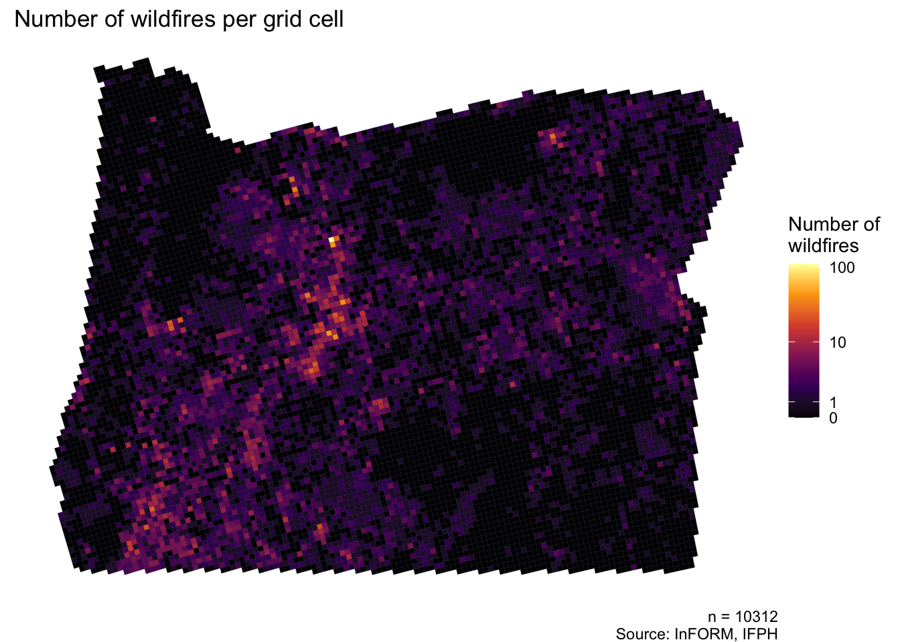
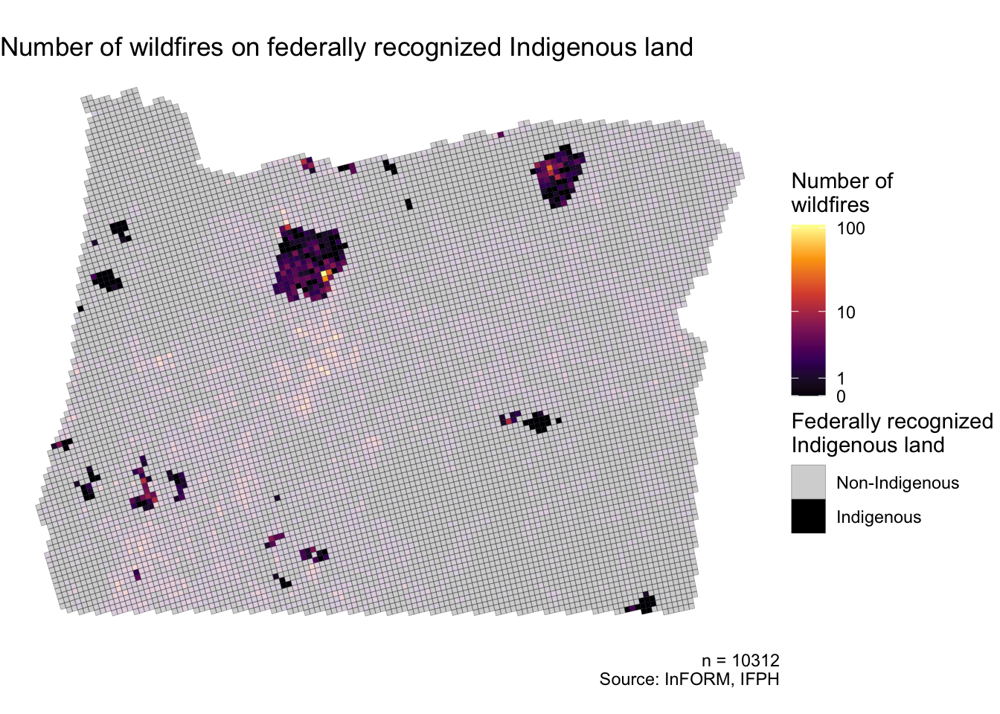
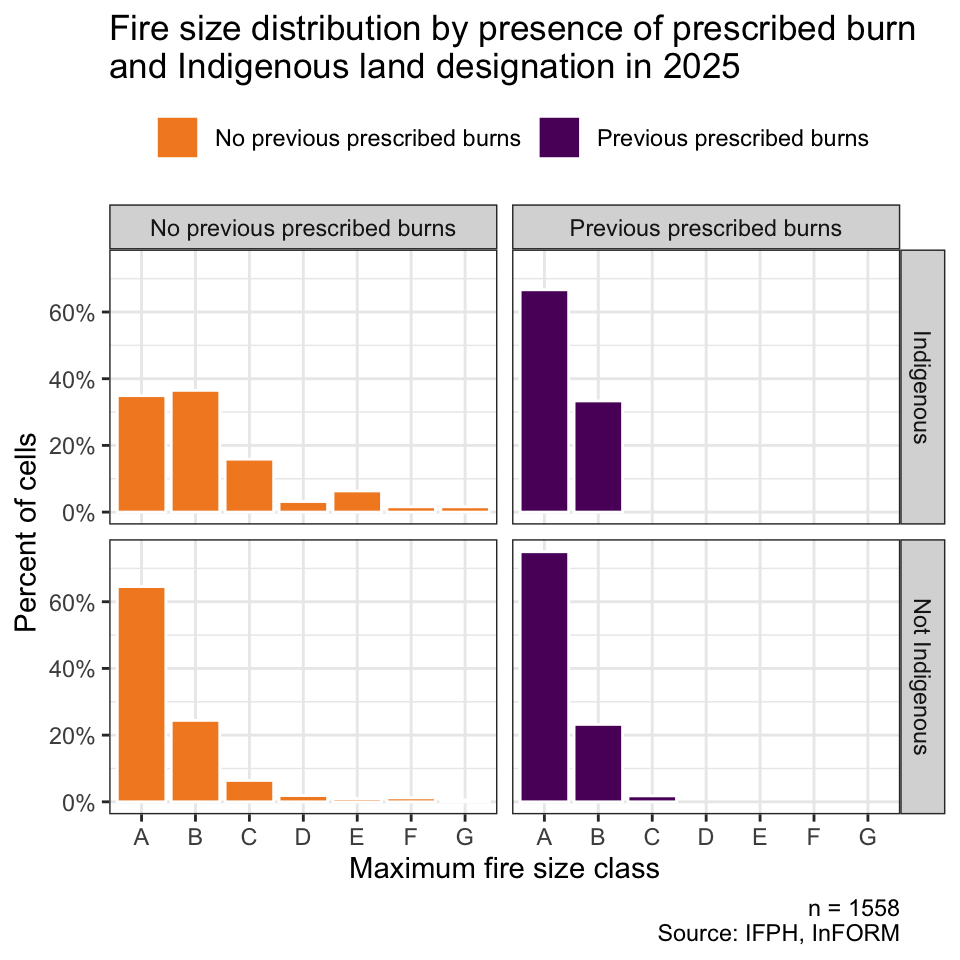
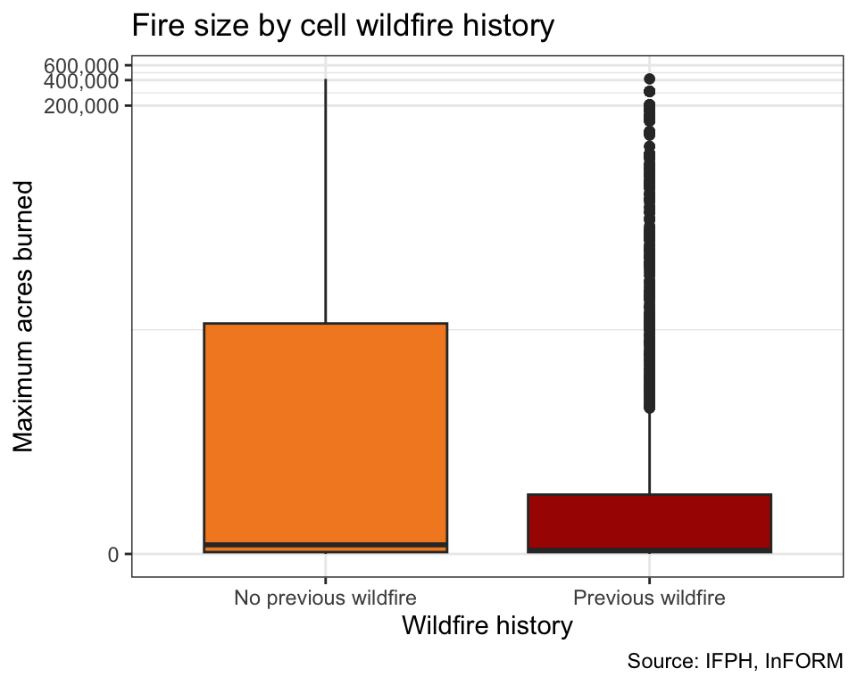
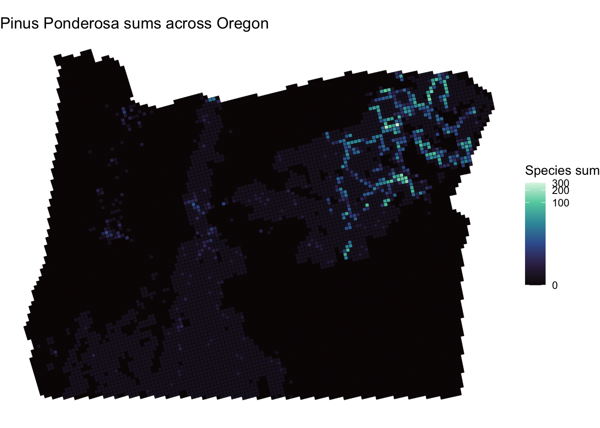
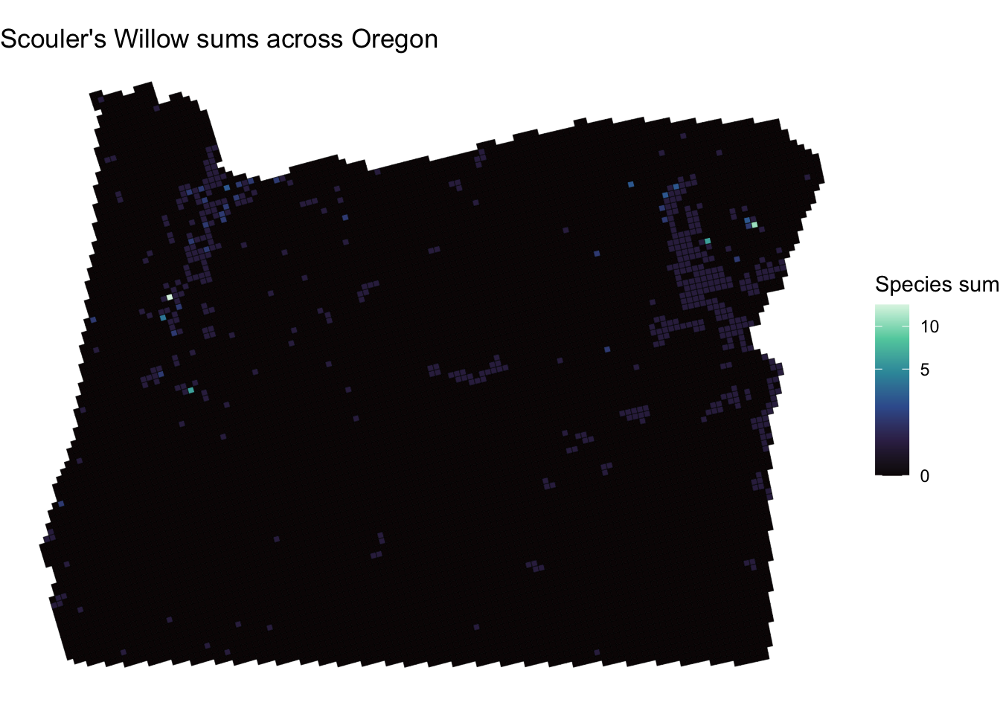
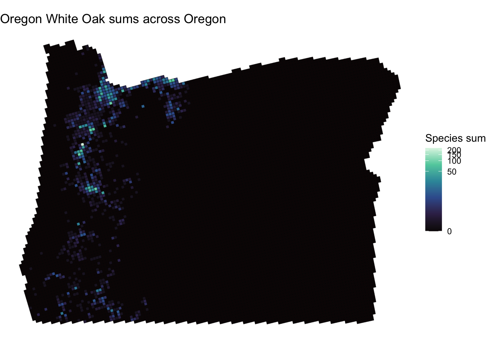
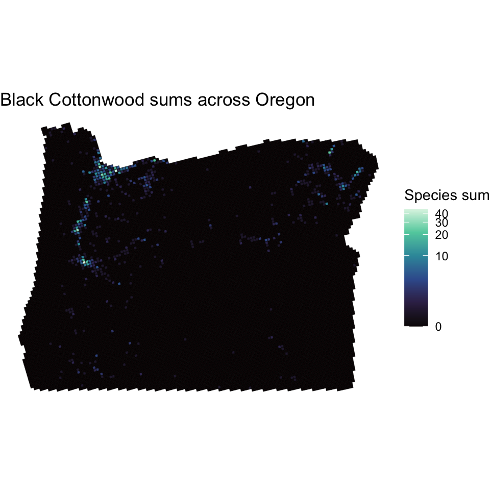
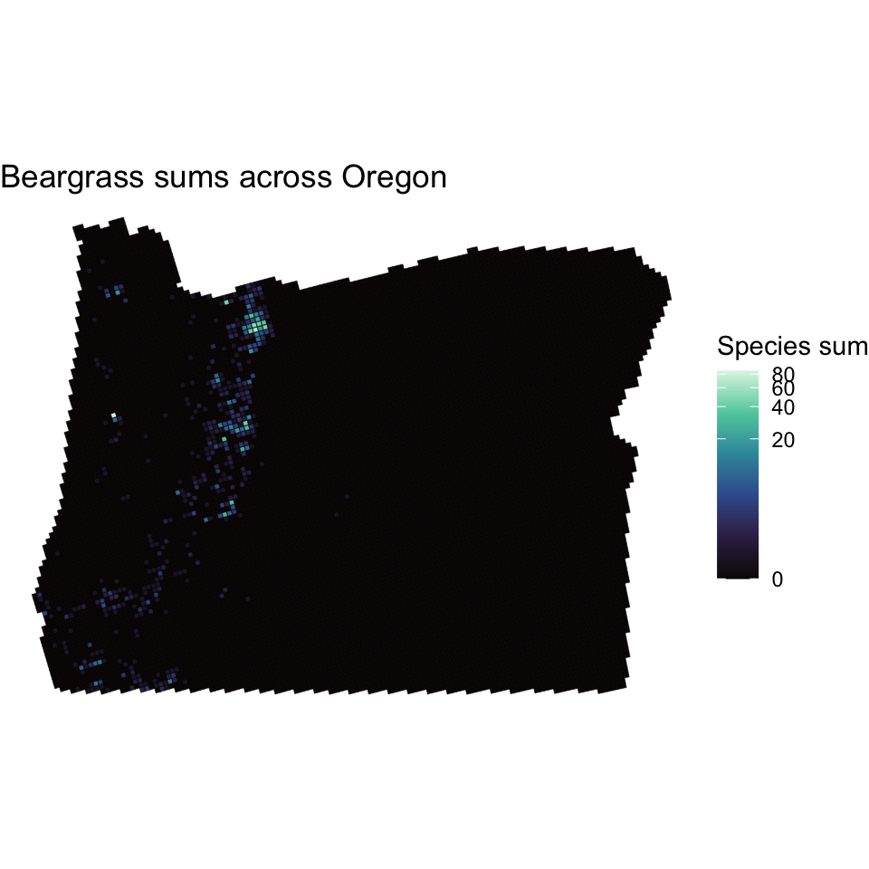

| Indigenous Status | Number of Cells |
|---|---|
| Non-Indigenous | 9962 |
| Indigenous | 350 |
Oregon on Fire
Wildfire Severity, Prescribed Burns, and Species Distribution Across Indigenous and Non-Indigenous Oregon Lands
Title, Team, and Affiliations
Project title: Oregon on Fire: Wildfire Severity, Prescribed Burns, and Species Distribution Across Indigenous and Non-Indigenous Oregon Lands
| Name | Role | Willamette email |
|---|---|---|
| Spencer Fiden | Owner Product Lead | nefiden@willamette.edu |
| Amaya Supancich-McCord | Owner Product Lead | asupancichmccord@willamette.edu |
Peer Stakeholder POs: Siera Edwards, Brooke Proctor, Serenna Walter (Shared Theme: Pacific Northwest forest and environmental health.)
Repository: https://github.com/Fiden-Supancich-McCord/data510-fire/tree/main
Abstract
Increasing wildfire activity (Lundeberg 2026) throughout the western United States has renewed interest in understanding the ecological factors associated with wildfire severity, including the potential influence of Indigenous stewardship and prescribed fire. This project used publicly available ecological and wildfire datasets to evaluate forest compositional diversity and wildfire characteristics across federally recognized Indigenous and non-Indigenous lands in Oregon between 2015 and 2025.
Results indicated relatively few consistent differences in plant abundance or forest compositional diversity, and no measurable improvement in the Shannon Diversity Index by land status. Similarly, wildfire severity metrics exhibited negligible practical differences between land categories despite distributional differences. Machine learning models achieved modest predictive performance, with previous wildfire history and vegetation characteristics consistently emerging as stronger predictors of wildfire severity than designated Indigenous land or prescribed burn history. Previous prescribed burns were significantly associated with a greater proportion of smaller wildfire events, although their observed effects remained small.
These findings demonstrate both the utility and limitations of publicly available ecological datasets for landscape-style wildfire research and highlight the strong association between previous fire history and vegetation characteristics on wildfire severity. Collectively, this project demonstrates how reproducible geospatial data science workflows can integrate heterogeneous datasets to investigate landscape-scale questions regarding biodiversity, wildfire resilience, and land stewardship. While the available datasets do not fully capture the complexity of Oregon’s ecosystems or Indigenous stewardship practices, the resulting analytical framework provides a foundation for future research incorporating more comprehensive biodiversity inventories, additional environmental covariates, and expanded measures of wildfire resilience and severity.
Introduction: Problem and Research Questions
Problem
Wildfire activity has become an increasingly significant ecological, economic, and public safety concern throughout the western United States. In Oregon and across the broader Pacific Northwest, longer fire seasons, changing climatic conditions, expanding development within the wildland-urban interface, and more than a century of widespread fire suppression have contributed to larger and more severe wildfires that threaten ecosystems, infrastructure, and human communities (Abatzoglou and Willams 2016; Hessburg et al. 2021). Beyond their immediate impacts on human populations, wildfires influence forest compositional diversity, biodiversity, nutrient cycling, carbon storage, and long-term ecosystem resilience (Johnstone et al. 2016). As wildfire frequency and severity continue to increase, identifying management strategies that promote healthier and more resilient forest ecosystems has become a priority for land managers, policymakers, Tribal governments, and conservation organizations (Hessburg et al. 2021).
For thousands of years, Indigenous communities throughout North America have actively shaped forest ecosystems through stewardship practices that include cultural burning, selective harvesting, habitat management, and long-term ecological observation (Coughlan et al. 2024). Rather than seeking to eliminate fire from the landscape, many Indigenous stewardship systems incorporated intentional burning to reduce hazardous fuel accumulation, promote desired plant communities, maintain wildlife habitat, and sustain culturally important resources (Coughlan et al. 2024). Historical fire exclusion policies implemented during the twentieth century substantially reduced the use of cultural burning throughout much of the western United States, contributing to changes in forest structure, fuel accumulation, and wildfire behavior (Hessburg et al. 2021). Increasing recognition of Indigenous ecological knowledge has renewed interest in understanding how Indigenous stewardship practices, namely prescribed burns, may contribute to contemporary wildfire resilience and ecological restoration (i.e., reduced fire severity and increased biodiversity) (Coughlan et al. 2024).
Research Questions
Three primary research questions guide this project. Because the project relies exclusively on observational data, all analyses are intended to identify statistical associations rather than establish causal relationships.
Research Question 1: Can publicly available ecological data be used to evaluate forest compositional diversity across federally recognized Indigenous and non-Indigenous lands across Oregon? This question evaluates whether there is an observable difference in the abundance of representative plant taxa and overall forest compositional diversity, as quantified by the Shannon Diversity Index.
Research Question 2: Are federally recognized Indigenous lands associated with different wildfire characteristics than non-Indigenous lands? This question examines observed wildfire duration and size.
Research Question 3: Are Indigenous land recognition status, the presence of fire-resistant and keystone species, and prescribed burns associated with lower wildfire severity? This question investigates the relative importance of vegetation composition, prescribed burning, and Indigenous land designation in explaining variation in wildfire severity metrics.
While Indigenous Peoples’ relationships to the land exist regardless of federal boundaries, for this project, federal boundaries, as reported by LandMark, are used to distinguish between land types. For brevity, these land types are discussed as Indigenous and non-Indigenous, not to erase the Indigenous stewardship that occurs outside these boundaries.
Impact and Stakeholders
The findings of this project may be relevant to Tribal governments and Indigenous communities, land management agencies, conservation organizations, and environmental researchers involved in wildfire management, ecological conservation, and ecosystem stewardship. The reproducible geospatial workflows developed in this project demonstrate how publicly available biodiversity observations, wildfire occurrence records, prescribed fire inventories, and vegetation datasets can be integrated into standardized spatial units for statewide ecological analysis. This approach may support evidence-informed decision-making, identify landscape-scale patterns for further investigation, and help guide future monitoring and field-based research. For Tribal governments and Indigenous land managers, the project provides quantitative comparisons of biodiversity and wildfire characteristics across federally recognized Indigenous and non-Indigenous lands while recognizing that publicly available datasets cannot fully capture the cultural, historical, or ecological complexity of Indigenous stewardship practices. For land management and conservation agencies, the analytical framework illustrates how multiple environmental datasets can be synthesized to inform future restoration, wildfire mitigation, prescribed fire, biodiversity monitoring, and ecosystem resilience efforts.
Data and Data Engineering
Data Invetory
This project integrates multiple publicly available ecological and geospatial datasets describing biodiversity, species abundance, wildfire occurrence, prescribed fire activity, historical vegetation, and federally recognized Indigenous lands throughout Oregon. Each dataset was selected to contribute complementary information necessary to evaluate forest compositional diversity and wildfire characteristics at a statewide scale. The following species were selected from the GBIF dataset due to their recorded influence on the Oregon ecosystem: Ponderosa Pine (Pinus ponderosa var. benthamiana) and Oregon White Oak (Quercus garryana) were selected due to their nature as fire-adapted tree species (Fryer, n.d.; Gucker 2007); Beargrass (Xerophyllum tenax), California Blackberry (Rubus ursinus), and Scouler’s Willow (Salix scouleriana) were identified as culturally important Indigenous plant species (The Owl Ridge Trails Report 2008); Western Redcedar (Thuja plicata) and Black Cottonwood (Populus balsamifera subsp. Trichocarpa) were identified as keystone wildlife habitat species (“Western Redcedar Dieback,” n.d.; “Black Cottonwood” 2019). Because no single dataset contained all required ecological variables, substantial data engineering was required to standardize data types, reconcile coordinate reference systems, and integrate observations into a unified analytical framework.
| Source | Role | License | Scope | Type | Size |
|---|---|---|---|---|---|
| LandMark | Indigenous & community land boundaries | Creative Commons Attribution-ShareAlike 4.0 (CC BY-SA 4.0) | Global, current record | Simple features multipolygons | 11 OR records; ~2.1 GB total (global) |
| Global Biodiversity Information Facility (GBIF) | Species occurence records for biodiversity/vegetation metrics | Open-data framework using CC0, CC BY, and CC BY-NC licenses | Oregon, 2015-2025 | Tabular with coordinates | 23,571 records; ~14.6 MB |
| State of Oregon Historic Vegetation | Complementary vegetation record to distinguish between environment types | Creative Commons CC0 1.0 (public domain dedication) | Oregon, compiled historic record (1851-1910 and 1930) | Simple features multipolygons | 43,628 records; ~160 MB |
| NIFC InFORM Fire Occurrence Data Records (InFORM) | Fire occurrence records, including wildfires and prescribed burns | No formal open-data license identified; use and redistribution require careful consideration and source attribution | USA, 1922-2026 | Tabular with coordinates | 1,221,418 records; ~580 MB |
| NIFC Interagency Wildland Fire Perimeter History (IFPH) | Fire occurrence records, including wildfires and one prescribed burn | No formal open-data license identified; use and redistribution require careful consideration and source attribution | USA, 1668-2025 (includes historic record) | Simple features multipolygons | 4,263 OR records, ~760 MB total (national) |
| Common Name | Scientific Name | Number of GBIF Records |
|---|---|---|
| Ponderosa Pine | Pinus ponderosa var. Benthamiana | 9,601 |
| Scouler’s Willow | Salix scouleriana | 195 |
| Oregon White Oak | Quercus garryana | 4,717 |
| Black Cottonwood | Populus balsamifera subsp. Trichocarpa | 1,652 |
| Western Redcedar | Thuja plicata | 3,683 |
| Beargrass | Xerophyllum tenax | 1,879 |
| California Blackberry | Rubus ursinus | 3,715 |
Data Engineering
Because the datasets originated from independent organizations using different formats, coordinate systems, temporal ranges, and reporting standards, extensive preprocessing was required before statistical analyses could be performed. Figure 1 summarizes the overall analytical workflow.

Data Cleaning and Quality Assurance
Each dataset underwent systematic quality assessment prior to integration. Initial inspection identified differences in variable naming conventions, data types, coordinate reference systems, temporal coverage, and missing values. Date fields were standardized into consistent datetime formats, and categorical variables were recoded and leveled where appropriate.
The IFPH and InFORM data share a common unique fire identifier, which was used to join common fires. 817 records had matching identifiers in IFPH and InFORM; for these fires, IFPH values were preferred when both datasets were available, including the multipolygon geometry provided by IFPH. We excluded 866 records in the IFPH dataset that did not have counterparts in InFORM data from subsequent processing because they lacked the information necessary for our analysis. Fire records present only in InFORM were spatially placed using the provided coordinates and converted to point geometries; this included 10,686 records in Oregon from 2015-2025. Additionally, 27,538 records in InFORM within that time span lacked coordinates and were not included. However, these points were not necessarily within the spatial scope, as InFORM includes records from across the United States.
Additional work was undertaken to construct serviceable fire-start and fire-end dates. Three fire-end variables were available in the InFORM data (control date-time, contain date-time, and fire out date), each with varying levels of missingness. If multiple existed, the latest recorded date was used to represent the fire-end date. 3,443 point-based InFORM and 192 combined IFPH-InFORM polygon records were missing all three end-date variables and were therefore excluded from fire duration analyses; however, they were still included in fire size analyses.
Several quality control procedures were implemented throughout preprocessing. We standardized coordinate reference systems to WGS 84 across all spatial datasets to ensure accurate spatial joins. We inspected variable ranges for implausible values, removing one wildfire record with a negative burned area, standardizing 1970-01-01 dates to NA, and correcting two years that were off by one century (e.g., 2121 was changed to 2021). When missing, the calendar year was imputed from the fire discovery date-time, which had no missingness. Other missing values were evaluated on a variable-by-variable basis, with variables exhibiting extensive or complete missingness (e.g., discovery acres, estimated cost to date, final acres, final fire report approved by unit, general fire behavior, incident short description, reimbursability indicator, POO jurisdictional parent unit, and percent contained) excluded from downstream analyses. Rather than imputing observations, missing values were excluded from modeling. This approach avoided introducing artificial observations while preserving the integrity of the original datasets.
Spatial Integration and Feature Engineering
One of the primary contributions of this project is a reproducible spatial integration framework that combines heterogeneous datasets and geometries into standardized analytical units. All datasets were spatially joined using a common 5 km × 5 km analysis grid covering the state of Oregon, created using the US National Atlas Equal Area coordinate reference system. This grid provided a consistent spatial resolution for summarizing wildfire records, prescribed fire occurrence, vegetation characteristics, and Indigenous land designation. After its creation, the grid and all other spatial datasets were converted to the WGS 84 coordinate reference system, except InFORM and GBIF, which were already in WGS 84.
For each grid cell, we calculated a more representative species count by combining GBIF occurrence records with Historic Vegetation, increasing the plant occurrence count by one for any cell that intersected a relevant vegetation region. This operation was performed for Ponderosa Pine, Scouler’s Willow, Oregon White Oak, Black Cottonwood, and Western Rederar. California Blackberry and Beargrass were not included in the Historic Vegetation dataset, which focuses on broader patterns of dominant species, so their counts are based solely on GBIF records. Dual-tree categories were used for Ponderosa Pine and Oregon White Oak to include as many applicable regions as possible. Shannon Diversity Index values were subsequently calculated using the aggregated abundances to provide a quantitative measure of overall forest compositional diversity.
| GBIF Species Common Name | Oregon Historic Vegetation Region(s) | Number of Cells with Designation |
|---|---|---|
| Ponderosa Pine | Ponderosa pine, Ponderosa Pine-Lodgepole Pine, Douglas Fir-Ponderosa Pine | 3,431 |
| Scouler’s Willow | Willows | 516 |
| Oregon White Oak | White Oak Woodland, White Oak-Black Oak | 804 |
| Black Cottonwood | Black Cottonwood Riparian Woodland | 565 |
| Western Redcedar | Western Redcedar | 654 |
| Beargrass | N/A | 432 |
| California Blackberry | N/A | 932 |
| No plants recorded | N/A | 5,180 |
We created a binary indicator identifying whether each grid cell intersected federally recognized Indigenous lands using LandMark. We similarly summarized wildfire variables at the grid-cell level. These included wildfire counts, maximum wildfire duration in hours, maximum wildfire size in acres, wildfire size class (a factor based on the National Wildfire Coordinating Group’s size classifications), and a count of prescribed burns with all of the above size and duration metrics associated with them. All cells also included a list of unique fire identifiers associated with the fires present in that cell for manual cross-referencing with the original dataset if needed. The resulting feature engineering process transformed over seventy thousand individual observations into a standardized analytical dataset suitable for comparative statistical modeling while preserving spatial relationships among the original datasets.
In addition to the grid dataset, which included fire counts and metrics from 2015 to 2025, we created a second dataset that aggregates fire metrics annually. The federally recognized Indigenous land binary variable was held constant across our time span, as land borders have not changed during that period. Although the GBIF records had associated dates, the vegetation columns were treated as constant because the Historic Vegetation was not time-bound, and the resulting combined columns were treated as proxies for general forest compositional diversity rather than a yearly species census, given the uneven distribution of observations. The base grid was duplicated so each grid cell index was present for every year in the time span, and a unique row identifier was created by combining the year and grid cell index. For each year, the same set of fire metrics and counts were created using only fire records from that year. Further metrics were calculated from the time-series data, including rolling and cumulative sums of fire counts for wildfires and prescribed burns.
Ethics and Responsible Use
This project uses only publicly available ecological and geospatial datasets and does not involve personally identifiable information or human subjects data. Nevertheless, because several datasets concern designated Indigenous lands, biodiversity observations, and environmental resources, ethical data stewardship remains a central consideration.
Analyses follow the CARE Principles for Indigenous Data Governance (Collective Benefit, Authority to Control, Responsibility, and Ethics) (Perreault and Goodridge 2025), recognizing that publicly available datasets cannot fully capture Indigenous knowledge systems, stewardship practices, or cultural relationships with the land. Results are therefore interpreted as observational rather than causal, avoiding broad generalizations across Indigenous nations or deficit-based comparisons of land management practices. Findings are reported at the landscape level to characterize ecological patterns rather than draw cultural conclusions.
Across all datasets, applicable licensing, attribution, and data-sharing requirements are followed, sensitive metadata (such as observer names, recorder names, rights-holder information, and other unnecessary identifying metadata) are excluded from analysis and redistribution where appropriate, and project findings are presented to support collaborative wildfire stewardship while respecting Indigenous rights, data sovereignty, and responsible data use.
LandMark
The LandMark dataset provides global spatial and governance information concerning Indigenous Peoples’ and community lands, incorporating contributed and third-party datasets describing territorial boundaries and community-level information. Although the dataset does not contain direct personal identifiers, it includes information about Indigenous communities and therefore requires heightened ethical consideration. The LandMark Terms of Service require users to protect and respect the legal and customary rights of Indigenous Peoples and local communities and prohibit uses that may negatively affect these communities. While commercial-use provisions do not apply to this project, we intend to uphold the underlying principle of equitable benefit sharing by ensuring that findings are communicated in ways that may support the communities represented by the data. LandMark data are generally licensed under the Creative Commons Attribution-ShareAlike 4.0 (CC BY-SA 4.0) license, permitting redistribution and derivative works provided appropriate attribution is maintained, and derivatives are shared under the same license.
Global Biodiversity Information Facility (GBIF)
GBIF aggregates biodiversity occurrence records from publishers worldwide, including species observations, museum specimens, geospatial coordinates, observation metadata, and contributor information. Some occurrence records include metadata identifying observers, collectors, identifiers, rights holders, or data publisher representatives. Although these fields are available within the raw dataset, they are not used in this project and will be excluded from any redistributed analytical datasets as part of a data minimization strategy. GBIF datasets are published under standardized Creative Commons licenses (CC0, CC BY, or CC BY-NC), with individual publishers selecting the applicable license for their records. Accordingly, all publisher-specific licensing terms, attribution requirements, and restrictions on commercial use will be respected. Dataset DOIs, citations, and publisher acknowledgments will be retained in accordance with GBIF’s recommended citation practices.
NIFC InFORM Fire Occurrence Data Records (InFORM)
The NIFC InFORM Fire Occurrence Data Records (InFORM) dataset contains operational wildfire occurrence information and does not include a documented framework for collecting or processing personal data. No formal license accompanies the dataset; consequently, permission should be requested before redistribution or other uses beyond standard research applications. In the absence of an explicit open-data license, this project will not assume unrestricted redistribution rights, will avoid commercial redistribution without authorization, and will preserve source attribution and source throughout the analytical workflow.
NIFC Interagency Wildland Fire Perimeter History (IFPH)
The NIFC Interagency Wildland Fire Perimeter History (IFPH) dataset consists of historical wildfire perimeter polygons and associated environmental metadata. The dataset is described as being free for strategic use, permitting its use for planning, research, and analytical purposes. Because downstream redistribution terms are not explicitly defined, appropriate attribution will be maintained, and any additional federal geospatial data-use requirements will be reviewed before publicly redistributing derivative datasets.
Oregon Historic Vegetation
The Oregon Historic Vegetation dataset contains polygon-based geospatial features describing reconstructed historical vegetation communities and associated ecological characteristics. The dataset is released under the Creative Commons CC0 1.0 Public Domain Dedication, allowing unrestricted reuse, redistribution, and creation of derivative works without a legal requirement for attribution. Although attribution is not required under the license, this project will continue to cite the dataset and document its source for scientific transparency and reproducibility.
Methods and Evaluation
Research Question 1
Can we use publicly available ecological data to evaluate forest compositional diversity across federally recognized Indigenous and non-Indigenous lands across Oregon?
Methods
To evaluate whether designated Indigenous lands are associated with greater forest compositional diversity than non-Indigenous lands, we conducted two complementary analyses. First, we compared the abundance of seven representative plant groups between Indigenous and non-Indigenous lands. Second, we modeled overall forest compositional diversity using the Shannon Diversity Index.
Species abundance was measured for seven taxa: Ponderosa Pine (Pinus ponderosa var. Benthamiana), Scouler’s Willow (Salix scouleriana), Oregon White Oak (Quercus garryana), Black Cottonwood (Populus balsamifera subsp. Trichocarpa), Western Redcedar (Thuja plicata), Beargrass (Xerophyllum tenax), and California Blackberry (Rubus ursinus). For each species, an independent two-sample Welch’s t-test compared mean abundance between Indigenous and non-Indigenous lands. Welch’s test was selected because it does not require equal sample sizes and is more robust than the Student’s t-test when variances may differ. Levene’s tests were conducted to evaluate the homogeneity of variance. Although equal variances were generally supported across all species, plant abundance data contained many zero values and exhibited strongly skewed distributions. Consequently, Mann-Whitney U tests were also performed as a non-parametric sensitivity analysis to evaluate whether conclusions remained consistent when distributional assumptions were relaxed. Because statistical significance alone does not indicate practical importance, Cohen’s d was calculated for each comparison to quantify the magnitude of observed differences between Indigenous and non-Indigenous lands.
Overall forest compositional diversity was quantified using the Shannon Diversity Index, which combines species richness (the total number of different species in a community) and relative abundance (a measure of how equally individual organisms are distributed among those species) into a single diversity metric. Two linear regression models were developed. The baseline model predicted Shannon diversity using only the seven plant abundance variables. The full model included the same plant abundance variables with Indigenous status as an additional predictor. This comparison helped determine whether Indigenous status was associated with variation in diversity beyond differences in species counts. Model performance was compared using an analysis of variance (ANOVA), coefficient of determination (R²), and root mean squared error (RMSE).
Evaluation
Multiple validation procedures were implemented. Model generalizability was evaluated using five-fold cross-validation. The dataset was randomly partitioned into five equally sized subsets. During each iteration, four subsets were used for model training while the remaining subset was used for testing. Average RMSE and R² across the five folds were reported. Residual diagnostics were also examined to evaluate the assumptions of linear regression. Residual diagnostics were also examined to evaluate linear regression assumptions. Residual-versus-fitted plots assessed linearity, Q-Q plots evaluated residual normality, scale-location plots assessed homoscedasticity, and Cook’s distance identified influential observations. Together, these procedures evaluated both predictive performance and the appropriateness of the linear modeling assumptions.
Research Question 2
Are federally recognized Indigenous lands associated with different wildfire severity than non-Indigenous lands?
Methods
Welch two-sample t-tests were used to compare wildfire characteristics of fires on federally recognized Indigenous land with those on other lands. Wildfire severity was compared using cells’ wildfire count, maximum size in acres, maximum size class, and maximum duration using the aggregate wildfire metrics from the processed grid. Wildfire characteristics were evaluated both overall (including cells that had not experienced wildfires) and by comparing only fires (including only cells where at least one wildfire occurred between 2015 and 2025). Because this analysis did not require time-related metrics, we used cumulative counts across all years.
Evaluation
We evaluated significance using p-values from t-tests and the magnitude of differences using Cohen’s d. Cohen’s d was calculated for each comparison to quantify the magnitude of observed differences between Indigenous and non-Indigenous lands, because statistical significance alone does not indicate practical importance.
Research Question 3
Are Indigenous land recognition status, the presence of fire-resistant and keystone species, and prescribed burns associated with different wildfire severity?
Methods
Random Forest classifiers were used to evaluate each factor’s contribution to wildfire severity, including potential interactions between features. These models were run using time series data, as several metrics are time-based. The data included only cells that had had fires in that year to predict the severity of a fire rather than predict whether a fire occurred–the model assumes a fire will occur in a given cell. We engineered several features to represent a cell’s fire history in terms of both wildfires and prescribed burns. These included cumulative and rolling sums of fire counts and fire acreage. Rolling sums were right-aligned to include only fires from previous years and exclude the current year’s fires to prevent confounding with the target variable and to avoid assuming that prescribed burns that occurred within the same year necessarily occurred before a wildfire. For fire acreage, values were capped at 6,178, the number of acres in each cell. Limiting the range prevented extreme outliers from skewing the models and more accurately represented the state of an individual cell, which could at most be completely burned. The modeling range was limited to 2020-2025 when including prescribed burns as a feature, since the first prescribed burns in our record were in 2021. The rolling sums included the previous four years of fires so that years earlier in the data are not misleadingly skewed toward a smaller number of fires. To perform classification, maximum acres were split into three bins labeled “small”, “medium”, and “large”, respectively, using pandas’ qcut to create groups with roughly the same number of instances. For cells with maximum acres burned above 0, these groups were bound using the ranges in Table 5.
Additionally, Welch two-sample t-tests were used to determine whether previous prescribed burns and wildfire presence affected fire severity, using a binary indicator for whether the number of previous fires was greater than zero. Distribution visualizations (e.g., boxplots, bar plots) were also used to examine general trends in these areas.
| Fire Size Category | Acres Burned |
|---|---|
| Small | X ≤ 0.1 |
| Medium | 0.1 < X ≤ 4.72 |
| Large | > 4.72 |
Evaluation
Model performance was evaluated using accuracy and F-1 scores to assess performance across uneven category sizes, and optimized using ROC-AUC scores. Additionally, confusion matrices and classification reports were used to evaluate model performance on a per-class basis. The significance of theWelch two-sample t-tests findings was evaluated by the p-value resulting from the t-tests, and the scale of any difference was evaluated with Cohen’s d.
Results and Visualizations
Research Question 1

Species-Level Comparisons
Comparison of individual plant groups revealed few consistent differences between Indigenous and non-Indigenous lands. Welch’s t-tests indicated statistically significant differences for Western Redcedar and California Blackberry, which exhibited greater average abundance on non-Indigenous lands (Table 6). Mean differences for Ponderosa Pine, Scouler’s Willow, Oregon White Oak, Black Cottonwood, and Beargrass were not statistically significant. The non-parametric Mann-Whitney U tests produced somewhat different conclusions: significant differences between land-type categories were observed for Ponderosa Pine and Western Redcedar, with higher mean abundance on non-Indigenous lands, whereas the remaining species showed no statistically significant differences. The disagreement between the parametric and non-parametric tests likely reflects the highly skewed and zero-inflated nature of the abundance data, where mean-based and rank-based methods emphasize different aspects of the distributions. Overall, the analyses did not demonstrate a consistent pattern indicating a greater abundance of the measured plant groups on designated Indigenous lands. Instead, observed differences were species-specific and generally modest. To answer the research question, publicly available ecological data can serve as a marker for forest compositional diversity across land types, but they are not a comprehensive measure in this use case.
| Plant Species | Mean Species Abundance (Non-Indigenous) | Mean Species Abundance (Indigenous) | Welch’s t-test p-values | Mann-Whiteney U p-values |
|---|---|---|---|---|
| Ponderosa Pine | 1.20487854 | 1.2257143 | 0.9450517 | 0.0001186367 |
| Scouler’s Willow | 0.05751857 | 0.0400000 | 0.1785742 | 0.1699796488 |
| Oregon White Oak | 0.43896808 | 0.4000000 | 0.7547603 | 0.8492149566 |
| Black Cottonwood | 0.16181490 | 0.1171429 | 0.4764685 | 0.9087538262 |
| Western Redcedar | 0.34661715 | 0.0400000 | 7.552007e-07 | 0.0109302547 |
| Beargrass | 0.17165228 | 0.1171429 | 0.1510516 | 0.3628868174 |
| California Blackberry | 0.35555109 | 0.1657143 | 2.297990e-05 | 0.8777980018 |

Shannon Diversity
Shannon Diversity Index values – calculated on the plant count per species present per cell – were first compared directly between Indigenous and non-Indigenous lands. It’s imperative to mention that the use of Shannon’s Diversity Index in this situation does not align with its typical assumptions of randomly sampled individuals from an independent large sample in which all species are represented. Consequently, the calculated values do not align with its typical range; only 10 cells (9.697e-4%) fall within the expected 1.5-3.5 (inclusive) range, with all others falling significantly below this threshold. The estimated standardized effect size was minuscule (Cohen’s d = 0.052), indicating virtually no practical difference in overall compositional diversity between the two land types. Regression analysis reached a similar conclusion; the baseline model, which included only plant abundance variables, explained under a quarter of the observed variation in Shannon diversity (R² = 0.233). Several species were statistically significant predictors of diversity, with California Blackberry, Scouler’s Willow, Black Cottonwood, and Beargrass showing positive associations, while Western Redcedar and Ponderosa Pine exhibited small negative associations. Oregon White Oak was not a statistically significant predictor.
Adding Indigenous status to the regression model produced essentially no improvement in predictive performance. The coefficient for Indigenous status was not statistically significant (p = 0.769), and model fit remained virtually unchanged (R² = 0.233). Likewise, comparison of the baseline and full models using ANOVA found no statistically significant improvement after adding Indigenous status (F = 0.086, p = 0.769). These findings suggest that differences in Indigenous land designation status do not substantially explain variation in forest compositional diversity.
Because of the limited scope of species explored and the community-contributed, observation-based nature of the vegetation data, biodiversity metrics and diversity indices used in this project should be interpreted as proxies based on available observations rather than comprehensive measures of Oregon’s true biodiversity.
Model Validation
The five-fold cross-validation produced an RMSE of 0.254 and an R² of 0.207. These values were reasonably close to the full model’s in-sample performance (R² = 0.233; RMSE = 0.246), indicating that predictive performance declined modestly when evaluated on held-out data but did not show a substantial loss of generalization. The small reduction in explanatory power compared with the training model suggests there is little overfitting.
Residual diagnostics, however, indicated that several assumptions of ordinary least squares regression were not fully satisfied. Residual-versus-fitted plots (Figure 4) showed clustering rather than random scatter, suggesting departures from linearity. Q-Q plots (Figure 5) demonstrated deviations from normality, and scale-location plots (Figure 6) indicated unequal residual variance across fitted values. Cook’s distance (Figure 7) identified several influential observations, although only a small number of records exerted disproportionate influence on the model. Consequently, while the regression provides useful evidence regarding variable associations, the results should be interpreted primarily as descriptive rather than strictly causal.


Research Question 2
Maximum Acres Burned Across Indigenous Land Categories

| Indigenous Status | Number of Cells |
|---|---|
| Non-Indigenous | 4913 |
| Indigenous | 226 |
Although maximum fire size distributions were broadly similar between land categories, designated Indigenous lands exhibited a higher median maximum fire size than non-Indigenous lands, with medians of 45 and 2.99 acres, respectively. At the same time, non-Indigenous lands contained substantially more very small fire events, reflected by the large number of lower-end outliers. These findings suggest that fire regimes differ between land categories, but they do not indicate that one land type consistently experiences larger or smaller wildfires. It should be noted, when engaging in any interpretation of these results, that there is a significantly greater number of non-Indigenous land cells than those that are Indigenous land designated (see Table 4). Differences in land types may also be attributed to environmental factors unrelated to land status.


Comparisons of fire size classes showed that the overall distribution of wildfire sizes was similar between Indigenous and non-Indigenous lands. Maximum acres burned values were first compared between all Indigenous and non-Indigenous cells regardless of whether they had ever experienced a fire across all years. The coefficient for Indigenous status was not statistically significant (p = 0.39), and the estimated standard effect size was minuscule (Cohen’s d = 0.05), indicating no practical difference in maximum fire size between the two land types, despite the large sample size. A similar comparison of fire severity, measured by maximum acres burned between Indigenous and non-Indigenous land types but only including cells that had exhibited a fire within their borders, produced fairly similar results. The coefficient for Indigenous status was not statistically significant (p = 0.49), and the estimated standard effect size was minuscule (Cohen’s d = -0.04). Once again, this indicates no practical difference in maximum fire size between the two land types.
Maximum Fire Duration Across Indigenous Land Categories

| Indigenous Status | Number of Cells |
|---|---|
| Non-Indigenous | 4100 |
| Indigenous | 161 |
Although maximum fire duration distributions were broadly similar between land categories, designated Indigenous lands exhibited a higher median maximum fire duration than non-Indigenous lands, with medians of 899 and 495 hours, respectively (approximately 37.5 and 20.6 days). At the same time, non-Indigenous lands had substantially more quickly contained fire events, reflected by the large number of lower-end outliers. These findings suggest that fire regimes differ between land categories, but they do not indicate that one consistently experiences longer wildfire durations than the other.
As with acreage, maximum duration values were first compared directly between Indigenous and non-Indigenous cells regardless of whether they had ever exhibited a fire within their borders across all years. The coefficient for Indigenous status was not statistically significant (p = 0.15), and the estimated standard effect size was minuscule (Cohen’s d = -0.09), indicating no practical difference in maximum fire duration. Maximum duration values compared between only Indigenous and non-Indigenous cells that had exhibited a fire within their borders produced fairly similar results. The coefficient for Indigenous status and effect size were identical to those calculated for all indiscriminate cells, once again indicating no practical difference in maximum duration. As a caveat when interpreting the results discussed, unlike maximum acres burned, which has no missing values, the maximum duration category has 778 missing values.
Research Question 3
Comparison of Means and Distribution
Maximum fire size by year was compared between cells that had previously had prescribed burns and those that had not. When assessing all cells in all years (including cells that did not have a fire in a given year and whose maximum fire size is therefore 0 acres), the coefficient was not statistically significant (p = 0.42), and the effect size was minuscule (Cohen’s d = -0.06). When limited to cells that had experienced a fire in that year, therefore looking at fire severity rather than fire presence, there is a nearly significant difference in fire size (p = 0.057). However, the effect size is still small (Cohen’s d = 0.16). Because prescribed burns were only recorded starting in 2021, the sample was limited to 2020-2025 to remove variation occurring before prescribed burn records. In this case, the findings are more significant (p = 0.006), and the scale of difference is slightly larger, although still small (Cohen’s d = 0.21).

| Indigenous Status | Prescribed Burn | Number of Cells |
|---|---|---|
| Indigenous | No previous prescribed burns | 63 |
| Indigenous | Previous prescribed burns | 6 |
| Not Indigenous | No previous prescribed burns | 1433 |
| Not Indigenous | Previous prescribed burns | 56 |
Comparisons of fire size classes for 2025 showed that the overall distribution of wildfire sizes was similar between Indigenous and non-Indigenous lands, regardless of whether prescribed burns had occurred. Prescribed burning was associated with a greater proportion of small (Class A) fires, and a slight observable decrease in the proportion of higher class fires (Class C and above), across both land categories. These results suggest that prescribed fire may be associated with shifts toward a greater frequency of smaller fires.

| Prescribed Burn | Number of Cells |
|---|---|
| No previous prescribed burns | 7060 |
| Previous prescribed burns | 89 |
Welch’s two-sample t-tests revealed significant associations between fire size and prescribed burns in a previous year. The alternative hypothesis that cells that have previously had a prescribed burn experience a smaller mean maximum acres burned is supported with the achieved p-value of 0.02, when filtered to only cells that had experienced a wildfire that year. However, the scale of the difference is very small (Cohen’s d = 0.14). When limiting to 2020-2025, as our data did not report any prescribed burns before 2021, the significance is even higher, supporting the same alternative hypothesis (p = 0.001). The difference is slightly larger but still small (Cohen’s d = 0.19).

| Year | Prescribed Burn | Number of Cells |
|---|---|---|
| 2022 | No previous prescribed burns | 949 |
| 2022 | Previous prescribed burns | 2 |
| 2023 | No previous prescribed burns | 763 |
| 2023 | Previous prescribed burns | 1 |
| 2024 | No previous prescribed burns | 1469 |
| 2024 | Previous prescribed burns | 21 |
| 2025 | No previous prescribed burns | 1496 |
| 2025 | Previous prescribed burns | 62 |
| Fire Class Category | Acres Burned |
|---|---|
| Class A | ≤ 0.25 acres |
| Class B | 0.25 < X ≤ 10 acres |
| Class C | 10 ≤ X < 100 acres |
| Class D | 100 ≤ X < 300 acres |
| Class E | 300 ≤ X < 1,000 acres |
| Class F | 1,000 ≤ X < 5,000 acres |
| Class G | ≥ 5,000 acres |
“Fire class distribution by presence of previous prescribed burn over time” displays a time series view of the previous findings, separated into size class categories as defined by the NWCG (Table 11). The data were limited to cells that experienced at least one wildfire in a given year, and split by whether the cell had a recorded prescribed burn in any previous year. In all years, the distribution of wildfires that had occurred in cells with previous prescribed burns was skewed toward lower-class fires than in cells without prescribed burns. A notable exception to this extreme skew is in 2024, when more than a quarter of fires in cells with previous prescribed burns were class G (above 5000 acres). This is due to an unprecedented fire season that occurred in 2024 (Acker, 2024). In addition, the grid cell methodology interacts with large polygons in the IFPH dataset such that a large fire covering many cells has its size recorded as the maximum acreage across all cells it intersects, meaning that multiple cells reflect the same fire record. As such, it should be noted that the large number of cells that experienced class G fires is not necessarily reflective of the number of class G fires. This trend is matched by the cells without previously prescribed burns. Because this project did not account for differences in climate, vegetation type, topography, ignition source, or prescribed burn intensity, these observed patterns should not be interpreted as evidence that prescribed burning directly caused the differences in fire-size distributions.

| Previous Wildfire | Number of Cells |
|---|---|
| No previous wildfire | 5215 |
| Previous wildfire | 3810 |
Notably, we see greater effects when looking at previous wildfires than prescribed burns. A parallel test of fires between 2020 and 2025, comparing cells that have had at least one fire in the previous four years with those that have not, showed high significance (p < 2.2e-16). While still small, the scale of the difference between the categories was larger than for prescribed burns (Cohen’s d = 0.33). Although this finding is not causal, it reflects past findings that previous wildland fires reduce subsequent fire size by reducing available fuel (Parks, 2016). As shown in “Distribution of fire size between cells that have or have not previously experienced wildfires”, previous fires do not eliminate the possibility of large fires in the future, as there are many outliers.
Modeling
A Random Forest classifier using the designated Indigenous land indicator, sum of all plant species occurrences, and a count of all previous prescribed burns, limited to cells with maximum fire acreage greater than 0 between 2020 and 2025, achieved an accuracy of 0.437 after hyperparameter tuning using Optuna. For comparison, a classifier that always selected “small” for fire size (the largest category) would have an accuracy of 0.398. The SHAP values, a measure of each feature’s average impact on model output magnitude, show that this model relied heavily on plant sum for its classifications.

Another Random Forest classifier using the same metrics but adding wildfire metrics (rolling sum from the previous four years for wildfire count and wildfire acreage capped at 6,178 per year) achieved an accuracy of 0.459 after hyperparameter tuning. Plant sum was still the most important variable in SHAP value analysis, followed by the two wildfire metrics.

When the plant summary was separated into its seven distinct species and added to the previous model, the model performed slightly better with an accuracy of 0.473. However, plant counts did not change notably over our time series; species counts, especially because certain species occur in very few cells, may represent areas that are more or less susceptible to wildfires based on factors we may not be able to observe in our data. This is not to say that the presence of a given species is not impacting wildfire severity. Still, it is likely (especially given the model’s low performance) that other factors associated with certain plant species or their occurrence records are also impacting fire severity. The rolling sum of previous wildfires and their acreage are also among the top features for this model.
Model Validation

The confusion matrix shows that the first model (using prescribed burn, Indigenous designation, and plant sum as features) most frequently classified fires as small and was frequently wrong, with an F1-score of 0.54 for that category. It performed the worst in the medium category with an F1-score of 0.01, and slightly better for large fires with an F1-score of 0.45, although it still misclassified many of them as “small”.
The model with added wildfire metrics also frequently classified fires as small and was somewhat more accurate, with an F1-score of 0.57. Similarly, it performed very poorly with medium fires (F1 = 0.1) and better with large fires (F1 = 0.46). Overall, its improvements across categories are small but relatively evenly distributed.

Finally, the model that included all plant species separately predicted small fires with a slightly lower F1-score (F1 = 0.55). However, it correctly classified medium fires at a higher rate than either previous model (F1 = 0.16) and identified large fires at a closer rate to small fires than either previous model (F1 = 0.52).
Discussion, Limitations, and Future Work
Discussion
This project evaluated whether publicly available vegetation and wildfire datasets could be used to examine differences in forest compositional diversity and wildfire characteristics across federally recognized Indigenous and non-Indigenous lands in Oregon. Across the three research questions, Indigenous land designation alone explained relatively little variation in either forest compositional diversity or wildfire. Instead, local vegetation characteristics, previous wildfire history, and, to a lesser extent, prescribed burn history emerged as stronger predictors of wildfire metrics.
For forest compositional diversity, species-level analyses identified only modest and inconsistent differences between land categories. While Western Redcedar and California Blackberry showed greater abundance on non-Indigenous lands under parametric testing, non-parametric testing produced different significant species, illustrating the sensitivity of conclusions to highly skewed, zero-inflated ecological data. Similarly, Shannon Diversity Index comparisons and regression modeling demonstrated that Indigenous land designation status contributed essentially no additional explanatory power beyond vegetation composition. These findings suggest that differences in local environment types better explain variation in observed compositional diversity than other features within the available datasets.
Wildfire analysis produced similarly modest differences between land type categories. Although designated Indigenous lands generally exhibited slightly larger median fire sizes and durations, statistical testing of means found negligible effect sizes and practically no meaningful differences in maximum fire acreage or duration. These results indicate that wildfire behavior is broadly comparable across land categories. At the same time, the observed distributional differences suggest that fire regimes may vary across these regions in ways that are not adequately captured by our metrics, emphasizing the complexity of wildfire processes.
Machine learning analysis further reinforced this conclusion. Random Forest and XGBoost classifiers showed that previous wildfire frequency, previous wildfire acreage, and vegetation characteristics were substantially more influential predictors of wildfire size than Indigenous status or prescribed burn history. Although the observed effect sizes remained small, prescribed burns were associated with a greater proportion of smaller wildfire events and statistically different fire sizes. Together, these findings suggest that prescribed fire may contribute to moderating wildfire behavior, but is unlikely to be sufficient as a standalone predictor of wildfire severity.
Overall, this project demonstrates both the value and limitations of publicly available environmental datasets. While these data are sufficient to identify broad landscape-scale patterns and evaluate relative predictor importance, they are not suited to drawing causal conclusions regarding Indigenous stewardship or individual management practices. Rather, the findings emphasize that wildfire behavior is driven by multiple interacting ecological processes, with previous fire history and vegetation characteristics exerting a stronger measurable influence than land designation alone, within the available datasets.
Limitations
A major limitation of this project is that our biodiversity measures do not fully represent Oregon’s ecological diversity, which should be considered when interpreting the findings. In addition to restricting the scope of the GBIF data to seven ecologically significant species, the GBIF dataset relies heavily on community-contributed observations (e.g., iNaturalist), resulting in substantially greater sampling effort in more populated areas, particularly along the Oregon coast, than in rural or densely forested regions. Furthermore, areas outside the natural range of the selected species are expected to have few or no observations, creating additional gaps in biodiversity coverage. Because the project primarily assesses forest fires, the chosen species are traditionally found in forested areas; therefore, notable gaps exist, especially in non-heavily forested areas such as those historically categorized as open water or brush. Consequently, the biodiversity metrics and diversity indices used in this project should be interpreted as proxies based on available observations rather than comprehensive measures of Oregon’s true biodiversity.

Another limitation in the applicability of our vegetation datasets is that our Historic Vegetation dataset depicts native plant cover prior to widespread Euro-American settlement; that is, it represents data records spanning 1851-1910 and 1930. This further limits our biodiversity and vegetation-based modeling, as these mapped areas may not accurately correlate with modern ranges. However, the primary goal of including this data was to differentiate between areas missing GBIF plant records because they fall outside the applicable ecological sphere, rather than because of GBIF’s rural-area, survey-based missingness.
Further, the fire data have missingness in individual records and many records that do not exist across IFPH and InFORM. While IFPH values accurately reflected the calculations made using the sf package framework based on multipolygon data provided in IFPH, InFORM acreage values in matching records did not always align. This inconsistency may reflect differences in how fires were tracked between the two geometry types, potentially limiting the accuracy of values present only in the InFORM dataset. In addition, real-world fire occurrences can be messy (e.g., multiple fires can converge into a single fire) in ways that do not lend themselves to tabular data. Structured data science methods do not necessarily reflect the complexity of some of these occurrences. This may be impacting the discrepancies between IFPH and InFORM records, as a complex fire may be recorded differently when its perimeter is recorded.
Additional limitations were encountered when attempting to calculate an encompassing metric for calculating fire severity. This was primarily because many contextually compatible metrics, including fire-end date, management level, estimated cost to date, discovery acres, and final acres, had complete or high levels of missingness.
It is also likely that prescribed burns that occurred within this scope were not officially recorded, as going through official channels may incur financial and personnel time costs and possible legal ramifications.
Future Work
Future research would benefit from incorporating standardized vegetation surveys, broader measures of biodiversity, and additional environmental covariates, including climate, forest type, elevation, management history, and comprehensive fire severity measures. Expanding analyses beyond species abundance to include community composition and functional diversity, while integrating more comprehensive biodiversity datasets, would provide a stronger foundation for evaluating relationships between Indigenous stewardship, ecosystem characteristics, and wildfire resilience. Future work should explore generalized linear or non-linear modeling approaches that better accommodate skewed ecological data. We also recommend that interested parties consider additional wildfire metrics, such as estimated cost or management level, if they wish to explore finer modeling tuning options, as well as introducing normalization methods. Future work conducted collaboratively with Tribal Nations could provide a richer understanding of Indigenous stewardship and its ecological outcomes.
Conclusions and Recommendations
This project integrated publicly available biodiversity, wildfire, vegetation, and land ownership datasets to evaluate forest compositional diversity and wildfire characteristics across federally recognized Indigenous and non-Indigenous lands in Oregon. Across all three research questions, Indigenous land designation alone was not a strong predictor of forest compositional diversity nor wildfire severity. Differences across land categories were generally small, with negligible practical effect sizes despite several statistically significant comparisons.
Rather, vegetation composition, previous wildfire history, and prescribed burn history consistently explained more variation than Indigenous status. Regression analyses showed that land designation did not account for significant variation in Shannon diversity Index values. At the same time, machine learning models identified previous wildfire frequency and previous wildfire acreage as the strongest predictors of wildfire size. Prescribed burns were associated with modest increases in the proportion of smaller wildfire events.
These findings demonstrate that publicly available ecological datasets with disparate spatial data types can support large-scale analyses of wildfire and biodiversity, while also highlighting important limitations arising from sampling bias, incomplete environmental variables, and the complexity of wildfire dynamics. Rather than suggesting that land designation alone determines wildfire resilience, the results indicate that interacting ecological and historical factors beyond ownership boundaries shape outcomes.
Future work incorporating climate, topography, forest structure, standardized vegetation inventories, and more detailed records of prescribed fire implementation would provide a more comprehensive understanding of the relationships among vegetation, management practices, and wildfire severity. Such improvements would strengthen future studies’ ability to evaluate how Indigenous stewardship and ecological management contribute to long-term wildfire resilience.
We would recommend that the responsible parties work toward the following data and monitoring goals to support future improved endeavors: improve statewide reporting and accessibility of prescribed burn datasets, including burn objectives, treatment intensity, and timing; increase biodiversity monitoring across Oregon to reduce geographic and observational biases present in community-science datasets; continue integrating multiple public datasets into unified analytical pipelines to support reproducible, landscape-scale wildfire research.
Reproducibility and References
Reproduce main results:
cd your-repo
quarto render deliverables/M4-writeup-draft/writeup.qmdReferences
Abatzoglou, J. T., and A. P. Willams. 2016. “Impact of Anthropogenic Climate Change on Wildfire Across Western US Forests | Pnas.” Proceedings of the National Academy of Sciences of the United States of America. https://www.pnas.org/doi/10.1073/pnas.1607171113.
Acker, L. 2016-10-28. “Oregon’s Record-Breaking 2024 Fire Season Is Finally over - Oregonlive.com.” Oregon Live, 2016-10-28. https://www.pnas.org/doi/10.1073/pnas.1607171113.
“Black Cottonwood.” 2019. College of Agricultural Sciences, September 20. https://horticulture.oregonstate.edu/oregon-vegetables/black-cottonwood#.
Coughlan, M. R., J. D. Johnston, K. M. Derr, D. G. Lewis, and B. R. Johnson. 2024. “Pre-Contact Indigenous Fire Stewardship: A Research Framework and Application to a Pacific Northwest Temperate Rainforest.” Front. Environ. Archaeol., ahead of print. https://doi.org/10.3389/fearc.2024.1347571.
Coughlan, M., N. Serio, H. Loeb, D. Lewis, and S. Thompson. 2023. “Indigenous Fire Stewardship for Fire Management and Ecological Restoration in the Pacific Northwest Ecosystem Workforce Program.” Northwest Fire Science Consortium. https://www.nwfirescience.org/sites/default/files/publications/SynthesisReport_IFS_Full_Accessible_oct30.pdf.
Coughlan, M., N. Serio, H. Loeb, D. Lewis, and S. Thompson. n.d. Ndigenous Fire Stewardship for Fire Management and Ecological Restoration in the Pacific Northwest Ecosystem Workforce Program. n.d. https://www.nwfirescience.org/sites/default/files/publications/SynthesisReport_IFS_Full_Accessible_oct30.pdf.
Fryer, J. L. n.d. “Pinus Ponderosa Var. Benthamiana, p. Ponderosa Var. Ponderosa, Pacific Ponderosa Pine, Columbia Ponderosa Pine.” US Forest Service Research and Development. https://research.fs.usda.gov/feis/species-reviews/pinponp.
GBIF Occurrence Download. 2026. GBIF.org. https://doi.org/10.15468/dl.a9m8pz.
Gleason, S. 2025. “Tribes Lead the Way in Forest Resilience.” The Washington State Standard. https://washingtonstatestandard.com/2025/09/25/tribes-lead-the-way-in-forest-resilience/.
Gucker, C. 2007. “Quercus Garryana, Oregon White Oak.” US Forest Service Research and Development. https://research.fs.usda.gov/feis/species-reviews/quegar.
Hessburg, P. F., S. J. Prichard, K. Hagmann, N. Povak, and F. K. Lake. 2021. “Wildfire and Climate Change Adaptation of Western North American Forests: A Case for Intentional Management - Hessburg - 2021 - Ecological Applications - Wiley Online Library.” Forest Service U.S. Department of Agriculture, ahead of print. https://doi.org/10.1002/eap.2432.
Historic Vegetation [Data Set]. 2023. In GeoHub Data. State of Oregon. https://geohub.oregon.gov/datasets/oregon-geo::historic-vegetation/about.
Indigenous Peoples’ and Local Community Lands and Territories [Data Set]. 2026. LandMark: The Global Platform of Indigenous; Community Lands. https://landmarkmap.org/data-methods/access-data.
InFORM Fire Occurrence Data Records [Data Set]. 2025. National Interagency Fire Center. https://data-nifc.opendata.arcgis.com/datasets/nifc::inform-fire-occurrence-data-records/about.
InterAgencyFirePerimeterHistory AllYears View [Data Set]. 2025. National Interagency Fire Center. https://data-nifc.opendata.arcgis.com/datasets/nifc::interagencyfireperimeterhistory-allyears-view/about.
Johnstone, J. F., C. D. Allen, J. F. Franklin, et al. 2016. “Changing Disturbance Regimes, Ecological Memory, and Forest Resilience.” Frontiers in Ecology and the Environment, 369–78. https://doi.org/10.1002/fee.1311.
Lundeberg, S. 2026. “Study: Old-Growth Forests Face Highest Wildfire Risk in Areas That Once Burned Frequently.” Philomath News, Oregon State University. https://philomathnews.com/study-old-growth-forests-face-highest-wildfire-risk-in-areas-that-once-burned-frequently/.
Parks, S. A., and Gucker C. L. 2016-05. “Effectiveness and Longevity of Wildland Fire as a Fuel Treatment.” The Northern Rockies Fire Science Network, 2016-05. https://nrfirescience.org/sites/default/files/NRFSN_ResearchBrief1_FireAsFuelTrt.pdf.
Perreault, M. L., and L. D. Goodridge. 2025. “Indigenous Data Protection in Wastewater Surveillance: Balancing Public Health Monitoring with Privacy Rights.” Genomic Psychiatry, 22–27. https://doi.org/10.61373/gp025p.0008.
Size Class of Fire. n.d. National Wildfire Coordinating Groups. https://www.nwcg.gov/node/1737420.
Tallamy, D. 2024. “Keystone Native Plants: Marine West Coast Forests - Ecoregion 7.” National Wildlife Federation. https://www.nwf.org/-/media/Documents/PDFs/Garden-for-Wildlife/Keystone-Plants/NWF-GFW-keystone-plant-list-ecoregion-7-marine-west-coast-forest.pdf.
The Owl Ridge Trails Report. 2008. Oregon Websites; Watersheds Project. http://www.orww.org/Reports/Owl_Ridge_Trails/Part_5-6_Plants-Animals.pdf.
“Western Redcedar Dieback.” n.d. WSU Urban Forest Health Lab. https://treehealth.wsu.edu/redcedar-dieback/.
Additional Maps
See record counts in Table 2 and cell counts in Table 3.




